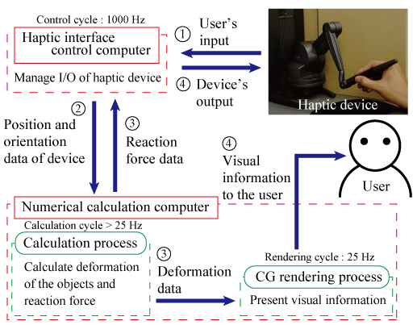

Haptic Interface Group
研究背景
近年、科学技術の進歩によりパソコンなどの製品はとても高機能になりました。
これにより、コンピュータシミュレーション技術は発展し、さまざまな分野に応用されるようになり、
現在注目が高まっています。
また、Virtual RealityやAugmented Reality技術の進歩によって、
我々はさまざまな現象を実際に見ることや触ることができない部分まで、
コンピュータシステムを通して擬似的に体験することができるようになってきました。
その中に「触れる」こと、力覚や触覚に関する研究や学問がハプティクスと呼ばれています。
この技術を研究し利用することで、視覚だけではなく、体性感覚にも働きかけることが可能になり、
より現実感があり、さらには実際には存在しない新たな情報量を提示できると考えられます。
研究目的
我々は、柔らかい物体を扱う場合に感じる力覚や触覚を実時間で提示可能な
ハプティックインタフェース技術を研究・開発しています。
この技術は、ロボット技術を導入し、
従来では治療困難だった病気の治療や低侵襲手術などの手術支援を実現しています。
この技術は、最先端の医療分野や、
より現実感が求められるアミューズメント・エンターテインメント分野から、
さらなる研究成果が期待されています。
{kind=link}
{kind=link}
研究内容
この研究の課題点は、演算時間が非常に大きくなる柔らかい物体の変形・反力計算と、デバイスによる操作者への安定な反力提示を実時間で実現することです。
柔軟物を操作する際の力覚・触覚を実時間で提示可能な シミュレータの必要条件は、
・ 数値計算プロセスでは計算を実時間で行う
・ CG描画プロセスでは視覚情報をユーザに実時間で提示する
・ ハプティック制御プロセスではなめらかな反力をユーザに実時間で提示する
のようになります。この条件を図示したものがFig. 2です。
Sensable Technologies 社製PHANToM Desktopのハプティックデバイスを用いています。 デバイスによる入力は位置情報，出力は力情報です。 デバイスの制御周期は1 ms（1000 Hz）です。
■ 数値計算プロセス
デバイスにより入力されたデータを有限要素法を用いて解き、モデル変形や反力の計算を行っています。有限要素法はしばしば計算量が膨大になり、実時間計算が困難になる手法として知られています。そこで我々は、計算量の問題を柔軟物を静的で均質な線形弾性体と近似した線形の有限要素法を用いることで解決し、 さらに反力提示手法を工夫することで安定な反力提示を実現してきました。
■ CG描画プロセス
数値計算プロセスより得られるモデルの変形情報を基に、モデルの描画をディスプレイに行っています。
現在は、非線形の有限要素法を用いた計算手法に変更し、実時間維持と変形の整合性をとることに努めています。また、今後は、切断や剥離などの位相変化シミュレーションについて研究を行っていきます。
柔軟物を操作する際の力覚・触覚を実時間で提示可能な シミュレータの必要条件は、
・ 数値計算プロセスでは計算を実時間で行う
・ CG描画プロセスでは視覚情報をユーザに実時間で提示する
・ ハプティック制御プロセスではなめらかな反力をユーザに実時間で提示する
のようになります。この条件を図示したものがFig. 2です。

■ ハプティック制御プロセス{kind=link}
Fig. 2 Composition of the system.
Sensable Technologies 社製PHANToM Desktopのハプティックデバイスを用いています。 デバイスによる入力は位置情報，出力は力情報です。 デバイスの制御周期は1 ms（1000 Hz）です。
■ 数値計算プロセス
デバイスにより入力されたデータを有限要素法を用いて解き、モデル変形や反力の計算を行っています。有限要素法はしばしば計算量が膨大になり、実時間計算が困難になる手法として知られています。そこで我々は、計算量の問題を柔軟物を静的で均質な線形弾性体と近似した線形の有限要素法を用いることで解決し、 さらに反力提示手法を工夫することで安定な反力提示を実現してきました。
■ CG描画プロセス
数値計算プロセスより得られるモデルの変形情報を基に、モデルの描画をディスプレイに行っています。
現在は、非線形の有限要素法を用いた計算手法に変更し、実時間維持と変形の整合性をとることに努めています。また、今後は、切断や剥離などの位相変化シミュレーションについて研究を行っていきます。
関連動画